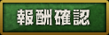

呪！3執念記念イベントだゾ！ | |||
『限定レシピ』や『限定ゾンビ』など
開催期間中にしかゲットできないモノが
手に入るぞ！
◆◇◆◇◆ 報酬 ◆◇◆◇◆今回の目玉はなんと！ついに登場！？よく話しかけてくる「あいつ」と「アリスコック」！   |
◆◇◆◇◆ 新ルール ◆◇◆◇◆【ソウル】最大3回分の襲撃をストックでき 1回の襲撃でソウル1つ消費。  ソウルは3時間に1つ回復。 【ステージ】 襲撃ステージは4つあり、ソウルを消費して入場することが出来る。 ★は難易度を表しており、星の数が多いほど高難易度です。 初期は★1ステージのみ遊べ、クリアすると一つ上のランクが解放されます。 【得点】 敵を倒すとポイント獲得 累積ポイントが規定値に達すると報酬がもらえます。 全滅しても得点を得ることが出来ます。 ステージをクリアするとゾンビ生還数に応じてボーナス得点が得られます。 大量ポイントがもらえる敵もいます。 
 |
◆◇◆◇◆ 特攻 ◆◇◆◇◆今回は攻撃力の倍増にプラスして、獲得ポイントの上乗せ効果もつくゾ！！※戦闘に参加しないと効果はつきません。 ちょい特攻野郎一覧 ・ドラキュア ・オオカミ伯父 ・FU-JIN ・RAI-JIN ・超名医 ・天才研修医 ・ITシャーマン ・OLシャーマン 特攻野郎一覧 ・フラン・Ａ・ケン ※特攻効果は今回の『ゾンビサバイバル3』内でのみ効果を発揮します。 |